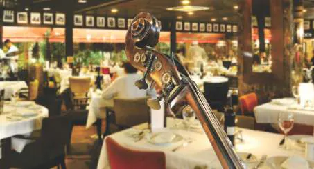
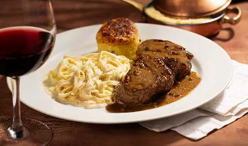

Il Ristorante
Cucina & Música
Cucina & música.
Com uma atmosfera acolhedora e um toque de sofisticação, o Il Ristorante, inaugurado em 2001 no nº 126 da Rua Avanhandava, oferece uma experiência gastronômica única.
- À mesa Carnes, peixes, massas e uma mesa de antepastos com mais de 40 itens. Todos os pratos são servidos de forma individual.
- À noite Durante o jantar, música ao vivo sem interrupções.


O cardápio.
Do Mezzogiorno especial do almoço às sobremesas, com o número e o preço de cada prato, como no cardápio da casa. Todos os pratos são individuais.
Reserve no 126.
A reserva é a mesma para todas as casas da família: escolha a casa e siga. Os horários do Il Ristorante ainda não estão publicados aqui: você diz o horário que prefere, e a casa confirma pelo WhatsApp.
Rua Avanhandava, 126.
Rua Avanhandava, 126
Bela Vista, São Paulo, SP
Bela Vista, São Paulo, SP